С конца февраля 1917 г., после прихода к власти Временного правительства, в жизни кадетских корпусов начались серьезные изменения. Новое руководство Военного министерства заявило о необходимости коренного реформирования корпусов по образцу милютинских военный гимназий.
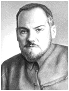
Крыленко Н.В. (1985-1938)
В ноябре 1917 г. народный комиссар по военным и морским делам Н.В. Крыленко распорядился прекратить прием во все старые военно-учебные учреждения. В конце 1918 г. все контролируемые советским правительством гимназии были переформированы в трудовые школы. Однако к тому времени большинство воспитанников кадетских корпусов, которые восприняли октябрьскую революцию в штыки, уже покинули свои корпуса, а воспитанники старших классов примкнули к белому движению.
Почти все кадеты в возрасте 16-17 лет с оружием в руках выступили против новой власти в Москве, Петрограде, Ярославле и других городах России. Несмотря на формальный роспуск кадетских корпусов, на протяжении всей Гражданской войны они продолжали действовать на занятыхбелыми войсками территориях. Однако крушение белой армии на Дальнем Востоке и юге страны привело к необходимости эвакуации кадетских корпусов и их исходу из России.
I. Эвакуация кадетских корпусов с юга России
Эвакуация Полтавского и Владикавказского кадетских корпусов. Создание и судьба Крымского кадетского корпуса.
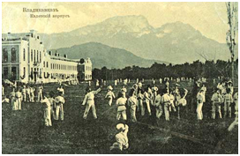
Здание Владикавказского кадетского корпуса. (Из частной коллекции)
Путь кадетских корпусов в эмиграцию практически начался в октябре 1919 г., когда Петровско-Полтавский корпус из-за неблагоприятно складывавшейся ситуации на фронте покинул Полтаву и перебрался во Владикавказ, где был принят Владикавказским кадетским корпусом.
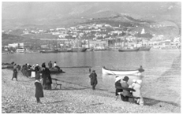
Ялта. 1920 г. (Из частной коллекции)
Весной 1920 г. было принято решение об эвакуации обоих корпусов из Владикавказа через Грузию (по Военно-Грузинской дороге, а затем – морем) в Крым. По Военно-Грузинской дороге кадеты, мальчики 9-10 лет, шли пешим порядком. В день проходили по 20-25 км. 23 марта корпуса прибыли в Кутаиси и были размещены в лагере, питаясь тем, что удалось вывести с собой. 9 июня 1920 г. на пароходе «Кизил Арват» корпуса прибыли в Крым и были размещены в Ореанде (Ялта).
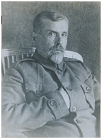
Директор Крымского кадетского корпуса генерал-лейтенант В.В. Римский-Корсаков (1859-1933)
В начале июля в приказом главнокомандующего Русской армией на Юге России генерала-лейтенанта П.Н. Врангеля директором корпуса был назначен бывший директор Первого Московского Императрицы Екатерины II кадетского корпус генерал-лейтенант Владимир Валерианович Римский-Корсаков.
К тому времени генерал П.Н. Врангель приказал отчислить из рядов Белой армии всех кадет, несовершеннолетних и не окончивших средние учебные заведения детей, и направить их в распоряжение генерала В.В. Римского-Корсакова. 22 октября 1920 г. П.Н. Врангель издал приказ, в соответствии с которым вновь созданный корпус стал именоваться Крымским кадетским корпусом. Его ряды пополнились воспитанниками практически всех кадетских корпусов, кроме Сибирского, Иркутского, Хабаровского и Донского. Тем же приказом в состав Крымского кадетского корпуса был включен Феодосийский интернат при Киевском Константиновском пехотном училище.
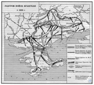
Карта боевых действий в Крыму в 1920 г.
В связи с катастрофическим для белой армии положением на фронте в ночь на 1 ноября 1920 г. началась эвакуация корпуса из Крыма.
Младшую роту погрузили на пароход «Константин», а основной состав – на вообще не пригодную для перевозки людей баржу «Христи». На пятые сутки оба судна прибыли в Константинополь. Там кадеты были пересажены на пароход «Владимир». В ходе карантинного стояния на рейде выяснилось, что единственной страной, готовых принять русских кадет, оказалось Королевство Сербов, Хорватов и Словенцев. 8 декабря 1920 г. корпус прибыл в бухту Бакар на территории Королевства С.Х.С. и оттуда по железной дороге был перевезен в г. Стрнище. Расположили кадет в бараках, построенных в период Первой мировой войны австрийцами для военнопленных.
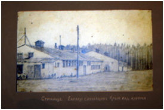
Стрнище. Бараки служащих Крымского кадетского корпуса (Из частной коллекции)
Во второй половине октября 1922 г. после многочисленных ходатайств генерала В.В. Римского-Корсакова Крымский корпус был переведен в г. Белая Церковь, где он и оставался до слияния с Русским кадетским корпусом в 1929 г.
Эвакуация Киевского, Одесского и Полоцкого корпусов. Создание и судьба Русского кадетского корпуса
Критическое положение белой армии на юге России вынудило эвакуироваться и другие находившиеся там кадетские корпуса. В декабре 1919 г., после постоянных потрясений и смен режимов на Украине, Киевский кадетский корпус организационно прибыл в Одессу и разместился в здании Одесского кадетского корпуса. К этому времени там уже находилась эвакуированная из Полоцка 2-я рота Полоцкого кадетского корпуса.
22 января 1929 г. по одесскому гарнизону был отдан общий приказ об эвакуации, однако в корпусе никаких мероприятий в этой связи не проводилось. Наконец, в ночь на 25 января несколько старших кадет сформировали группу из 350 воспитанников и по находившему уже под обстрелом городу направились в порт, где их принял на борт британский крейсер «Церес». Уже в море эта группа была пересажена на пароход «Рио Негро», который доставил кадет в греческие Солоники, откуда они поездом отправились в Королевство С.Х.С.
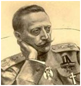
Генерал-лейтенант Б.В. Адамович. (1870-1936)
На следующий день еще одна группа кадет была принята на борт того же «Цереса». На утро они были пересажены на пароход «Царь Фердинанд», который доставил их в Варну, откуда кадеты были переправлены в г. Сисак Королевства С.Х.С. 10 марта 1920 г. приказом генерала В.А. Артамонова, в то время полномочного представителя главнокомандующего Русской армией генерала П.В. Врангеля в Белграде, кадеты Киевского, Одесского и Полоцкого корпусов были сведены в один, который получил наименование Русского Сводного кадетского корпуса. Директором корпуса был назначен генерал-лейтенант Борис Викторович Адамович.
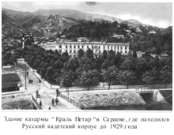
Казармы «Короля Петра» в Сараево.
Первоначально кадеты располагались в городах Панчево и Сисак, а затем (в июне 1920 г.) были объединены в Сараево в предоставленных ему казармах «Короля Петра». В Сараево корпус, который кратко наименовался Русский кадетский корпус, находился до 1929 г.
Осенью 1929 г. корпус был переведен из Сараево в Белую Церковь и слит с уже существовавшим там Крымским кадетским корпусом. 1 сентября 1929 г. корпус получил название Первый Русский кадетский корпус, а 6 декабря 1929 г. король Александр I Карагеоргиевич пожаловал корпусу наименование Первый Русский Великого князя Константина Константиновича кадетский корпус. Корпус находился в Белой Церкви до своего закрытия в 1944 г.
Эвакуация Донского Императора Александра IIIкадетского корпуса
Революционные события 1919 г. на юге России в наименьшей степени затронули Донской Императора Александра III кадетский корпус, который жил своей обычной размеренной жизнью вплоть до 17 декабря, когда в связи с изменением обстановки на фронте директор корпуса издал приказ о его эвакуации. 22 декабря частично на подводах, частично пешим порядком кадеты покинули привычное расположение и двинулись на Екатеринодар. Но слухи о всеобщей эвакуации заставили их следовать дальше – к Новороссийску, куда они и прибыли в 20-х числах января 1920 г.
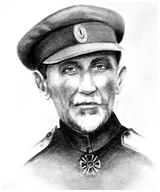
Генерал-лейтенант А.В. Черячукин (1872-1944)
Директор корпуса генерал-лейтенант А.В.Черячукин был заверен руководителем английской миссии при донском правительстве генералом Холмэном в возможности взятия корпуса на попечение британских властей и его отправке в Англию.
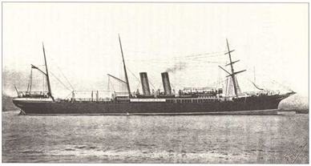
Пароход «Саратов»
Он даже якобы направил соответствующий запрос военному министру Великобритании У. Черчиллю. Однако время шло, а ответа из Лондона так и не было. В результате, кадеты были погружены на пароход «Саратов», на котором они через Босфор и Кипр в начале марта 1920 г. прибыли в Александрию и были размещены сначала в местечке Сиди-Башр, затем – в Тель-Эль-Кебире и, наконец, - в Исмаилии, вблизи Ливийской пустыни.
Под давлением обстоятельств (Великобритания, налаживавшая отношения с Россией, не очень хотела иметь на территории своей колонии российское военно-учебное заведение) директор корпуса был вынужден приступить к преобразованию корпуса в гражданскую среднюю школу. В результате летом 1922 г. английские власти решили расформировать корпус. Старших кадет решили отправить в Болгарию, где уже существововала русская гимназия (в Варне); часть из них попала в Чехословакию, в Моравску Тшебову где тоже действовала русская гимназия; а младших кадет решили перевести в английскую среднюю школу в местечке Буюк-Дере (близи Стамбула, Турция).
Во время эвакуации Донского кадетского корпуса из Новороссийска не все кадеты смогли покинуть Россию. В городе остались больные тифом. Среди них был и генерал-лейтенант И.И. Рыковский, который собрал всех оставшихся кадет и преподавателей и вывез их в Крым, сначала - в Симферополь, а затем – в Евпаторию. 2 ноября 1920 г., когда положение на фронте приблизилось к критическому, кадеты были погружены на военный транспорт «Добыча», который взял курс на Константинополь. 3 декабря 1920 г. прибывшие в Константинополь кадеты приказом по Великому войску Донскому стали официально именоваться Вторым Донским кадетским корпусом. В Константинополе они были пересажены на пароход «Великий Князь Владимир», на котором уже находились кадеты Крымского кадетского корпуса, и вместе с ними 14 декабря 1920 г. прибыли в Бакар в Королевстве С.Х.С., а оттуда также вместе с кадетами Крымского корпуса были направлены в г. Стрнище. Там корпус оставался недолго, и летом 1921 г. был перемещен в Билечу, небольшой городок в Герцеговине. 12 сентября 1922 г. приказом донского атамана Второй Донской кадетский корпус был переименован в Донской Императора Александра III кадетский корпус. В Билече корпус оставался тоже не долго: в сентябре 1926 г. он был переведен в небольшой городок Горажде, в Боснии.
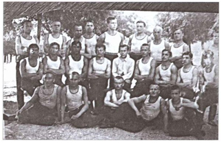
Кадеты Донского кадетскогокорпуса, 1926 г. (Из частной коллекции)
Во второй половине августа 1929 г. в корпус поступило решение Державной комиссии, в соответствии с которым часть кадет Крымского корпуса, сливавшегося с Первым Русским корпусом, переводились в Донской, а сам Донской корпус переименовывался во Второй Русский Императора Александра III Донской кадетский корпус. Спустя четыре года, 1 августа 1933 г., та же Державная комиссия приняла решение Второй Русский Императора Александра III Донской кадетский корпус закрыть, а его воспитанников перевести в дислоцированный в Белой Церкви Первый Русский Великого князя Константина Константиновича кадетский корпус.
Эвакуация Севастопольского морского Его Императорского Высочества Наследника Цесаревича кадетского корпуса
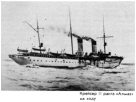
Крейсер «Алмаз»
В связи с Первой мировой войной Севастопольский морской кадетский корпус был открыт только 5 октября 1916 г. Однако после Февральской революции пришедшее к власти Временное правительство приказом по армии и флоту от 15 сентября 1917 г. ликвидировало корпус. Однако морские офицеры выдвинули идею возрождения корпуса, который в результате был вновь открыт 17 октября 1919 г. С января 1920 г. в связи с приближением фронта Морской корпус был объявлен на военном положении. 28 октября поступил приказ об эвакуации Крыма. В ночь с 31 октября на 1 ноября 1920 г. на 126 судах эскадры Черноморского флота в неизвестность отправились около 150 000 человек. Большая часть кадет находилась на крейсере «Алмаз».
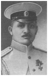
Вице-адмирал М.А. Кедров (1878-1945)
Вскоре корабли эскадры прибыли в Константинополь. Там приказом командующего Черноморским флотом вице-адмирала М.А. Кедрова кадеты Севастопольского морского корпуса и находившиеся там же кадеты Владивостокского морского училища были сведены в единый Морской кадетский корпус.
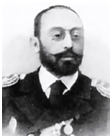
Вице-адмирал А.М. Герасимов (1861-1931)
Директором корпуса был назначен вице-адмирал А.М. Герасимов.
Во второй половине ноября 1920 г. стало известно, что местом пребывания русской эскадры и Морского кадетского корпуса будит портовый город Бизерта в Тунисе, куда все суда прибыли 27 декабря 1920 г. и встали на карантинную стоянку. 10 января 1921 г. комиссия из русских и французских офицеров осмотрела предложенные властями лагеря. Русские моряки остановили свой выбор на форте Джебель-Кебир, расположенный на вершине одноименной горы, и лагере Сфаят в пяти километрах от Бизерты. В форте Джебель-Кебир было решено разместить корпус, а в Сфаяте – семьи персонала, мастерские и склады.
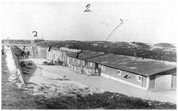
Форт Джебель-Кебир, где располагался Морской кадетский корпус (Из частной коллекции)
Летом 1921 г. состоялся первый выпуск в Бизерте. 14 марта 1922 г. ряд офицеров флота и корабельных гардемарин высказали желание продолжить обучение в иностранных университетах. В частности, через Францию в Прагу для продолжения обучения были отправлены 84 человека.
1 ноября состоялся последний выпуск из Морского корпуса. 10 ноября 1922 г. 10 гардемарин последнего выпуска и 15 гардемарин, окончивших Морской корпус, уехали во Францию. Там все они были приняты в Сорбонну. В этот же день уехали из Бизерты и 11 детей, зачисленных в различные учебные заведения Франции и Бельгии. С 1 января 1923 г. некогда знаменитое военно-морское учебное заведение России по указанию французских властей было официально переименовано в «Орфелинат» («Сиротский дом») и прикомандировано для довольствия к линкору “Георгий Победоносец”. Неофициально же для всех русских оно до конца продолжало оставаться Морским корпусом. 1 мая 1925 г. из корпуса выпустили две оставшиеся кадетские роты Бизертского набора. 25 мая приказом по Морскому корпусу он был ликвидирован окончательно. 6 мая 1925 г. для личного состава и выпускников расформированного Морского корпуса на построении в лагере Сфаят прозвучала заключительная команда директора «Разойтись!» Всего Морской кадетский корпус в Бизерте сделал пять выпусков офицеров флота, служивших затем во Франции, Австралии и на кораблях других стран.
II. Эвакуация кадетских корпусов с Дальнего Востока. 1-й Сибирский Императора Александра I кадетский корпус и Хабаровский графа Муравьева-Амурского кадетский корпус
После Февральской революции 1-й Сибирский, как и все остальные корпуса, был переименован в гимназию. После октябрьской революции и вплоть до освобождения Омска от советской власти летом 1918 г. кадеты принимали активное участие во всех выступлениях против нее. 18 ноября 1918 г., когда власть в Омске перешла в руки адмирала А.В. Колчака, военная гимназия вновь была переименована в 1-й Сибирский Императора Александра I кадетский корпус. В то время корпус состоял всего из двух рот. Летом 1919 г. положение на фронте значительно осложнилось и адмирал А.В. Колчак приказал эвакуировать корпус во Владивосток, куда он прибыл через Иркутск 30 сентября 1919 г. и был размещен совместно на острове Русском. В октябре 1920 г. там же были размещены оставшиеся кадеты Хабаровского корпуса, которые так же не приняли октябрьскую революцию и прошли через те же испытания, что и их товарищи из Омска.
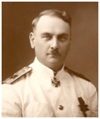
Контр-адмирал Г.К. Старк (1878-1950)
Когда стало очевиным, что власть в Приморье переходит под полный контроль Красной армии, директора обоих корпусов генерал-майоры Е.В. Руссет и А.А. Корнилов обратились к командующему Сибирской флотилией контр-адмиралу Г.К. Старку перебросить кадет хотя бы на другую сторону залива Петра Великого в город Посьет, где они могли бы присоединиться к белым частям.
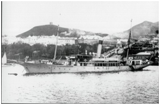
Охранный крейсер «Лейтенант Дыдымов» в одной из гаваней Владивостока
25 октября 1922 г. на транспорте «Защитник», канонерской лодке «Диомид» и небольшом пароходе «Фарватер» кадеты покинули бухту Новик. Ночью корабли прибыли в Посьет, а 31 октября пришвартовались в корейском порту Гензан. Там кадеты были распределены по другим судам флотилии, которые 29 ноября покинули Гензан и в начале декабря пришли в порт Фузан на юге Кореи. Через несколько дней флотилия вышла из Фузана и взяла курс на Шанхай. По дороге она попала в сильнейший шторм, во время которого затонул охранный крейсер «Лейтенант Дыдымов», на борту которого находились 16 кадет-хабаровцев и 19 сибиряков.
Уцелевшие корабли встали на якорь в Шанхае, однако на протяжении нескольких недель китайские власти не разрешали кадетам сойти на берег, не желая размещения российских корпусов в Шанхае. Только благодаря усилиям французского Генерального консула Вильдена с конца декабря 1922 г. кадетам разрешили группами сходить на берег. Вскоре в Шанхае образовался благотворительный комитет, в который вошли женщины из русской колонии. При содействии этого комитета в городе был арендован небольшой особняк, в котором и разместились оба корпуса. В это особняке кадеты оставались до осени 1923 г., когда они переехали в здание, находившееся неподалеку от русской церкви.
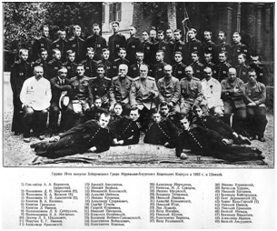
Группа выпускников Хабаровского кадетского корпуса. Шанхай. 1923
Весной 1923 г. состоялся выпуск. Почти все выпускники оставались в корпусе и покидали его только по мере устройства на работу.
С первых же дней пребывания в Шанхае директора корпусов начали изыскивать возможности для отправки кадет в Королевство С.Х.С., где уже находились три кадетских корпуса. Король Александр I Карагеоргиевич одобрил прибытие кадет Сибирского и Хабаровского корпусов в Королевство С.Х.С., но при условии, что все прибывшие кадеты будут распределены по трем уже существующим корпусам. Ограниченность средств не позволяла отправить сразу весь корпус, поэтому в первую партию были отобраны 25 младших кадет во главе с директором генералом Е.В. Руссетом, которые через Гонконг, Манилу, Сингапур, Коломбо, Аден, Геную и Неаполь прибыли в Королевство С.Х.С. и были сначала тепло приняты в Белграде, а затем отправлены в Донской кадетский корпус в Билече. Отъезд остававшихся в Шанхае кадет был состоялся 6 ноября 1924 г. 9 декабря кадетский корпус высадился на берег в порту Сплит в Королевстве С.Х.С. Позднее, как и предполагалось, кадеты были распределены по уже существующим корпусам.
III. Корпус-лицей Императора Николая II во Франции
Вынужденно покинувшие Россию кадеты, их офицеры-воспитатели и директора кадетских корпусов не оставляли стремления создать российское военно-учебное учреждение за рубежом.
В 1926 г. в Париже во время встречи генерал-лейтенанта В.В. Римского-Корсакова с выпускниками 1-го Московского Императрицы Екатерины II кадетского корпуса была высказана идея открыть кадетский корпус в Париже. В результате этой встречи, в конце августа 1929 г. в Париже был зарегистрирован Русский комитет для возможной организации русских учебных заведений: для мальчиков – Кадетского корпуса Императора Николая II, и для девочек – лицея Императрицы Александры Федоровны. Из двух проектов удалось осуществить только один – создание корпуса-лицея Императора Николая II, который расположился в специально приобретенном для этой цели доме в местечке Вилье-ле-Бель в 18 км к северу от Парижа.
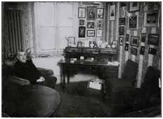
В.В. Римский-Корсаков в своем рабочем кабинете. Виль-ле-Бель. 1931 (Из частной коллекции)
На пост директора корпуса был приглашен генерал-лейтенант В.В. Римский-Корсаков
В положении об учебном заведении было, в частности, сказано: «Корпус-лицей Императора Николая II является закрытым учебным заведением и имеет целью воспитание и образование русских детей и юношей в духе девиза императорских российских кадетских корпусов – Вера, Царь и Отечество.”
1 ноября 1930 г. в корпус принял первых 32 воспитанника. За время своего существования (1930- 1964 гг.) корпус прошел несколько этапов развития:
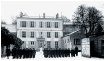
Кадеты перед зданием корпуса-лицея в Виль-ле-Бель. 1932 (Из частной коллекции)
1930-1937 гг. – корпус располагался в Виль-ле-Бель. Это был период становления корпуса. Там же был проведен первый выпуск.
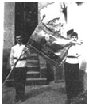
Кадеты со знаменем корпуса-лицея Императора Николая II (Из частной коллекции)
1937-1959 гг. – корпус находился в Версале в новом, специально арендованном и отреставрированном здании. В 1940-х годах в корпусе числилось свыше 100 кадет.
1959-1964 гг. – корпус переехал в Дьепп, на берегу Ла-Манша. В 1964 г. корпус из-за финансовых трудностей перестал сущестовать. В 1965 г. дом, в котором он размещался был продан.
Поскольку французский закон запрещал существование иностранных военных учебных заведений на территории страны, учебное заведение называлось то Корпус, то Корпус-лицей или Лицей Императора Николая II, а пред закрытием в 1964 г. – просто Русская школа.